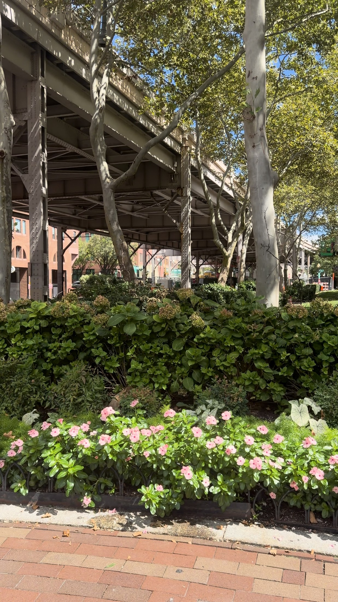
Garden by the Walkway
A row of pale pink flowers brightens a brick walkway beside trees and a raised wooden structure.
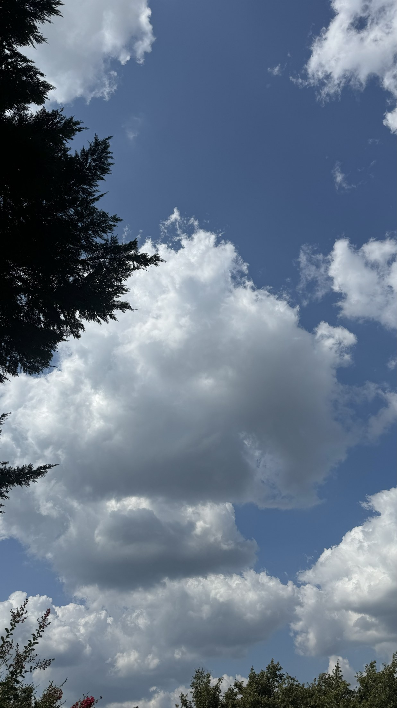
Clouds Through the Trees
Large white clouds rise into a deep blue sky, framed by dark branches at the edge.
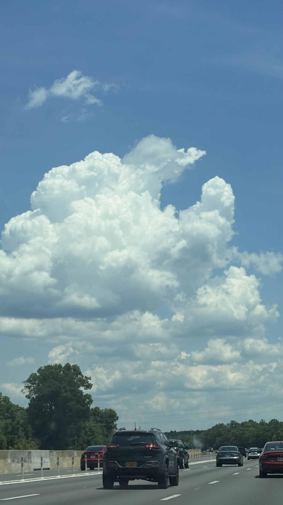
Open Road, Open Sky
A towering white cloud formation stretches over a busy multilane road.
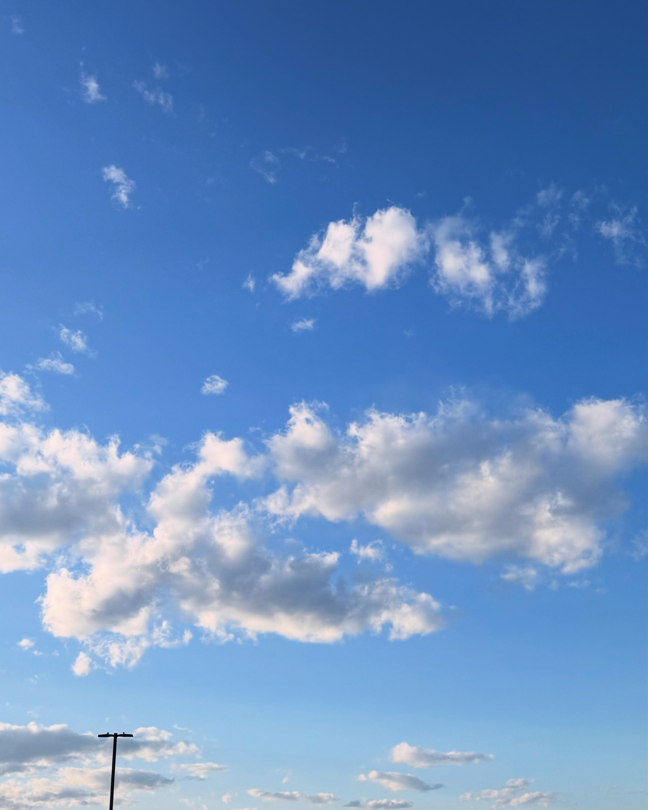
A Little Space to Breathe
Small sunlit clouds drift across an open blue sky above a distant streetlight.
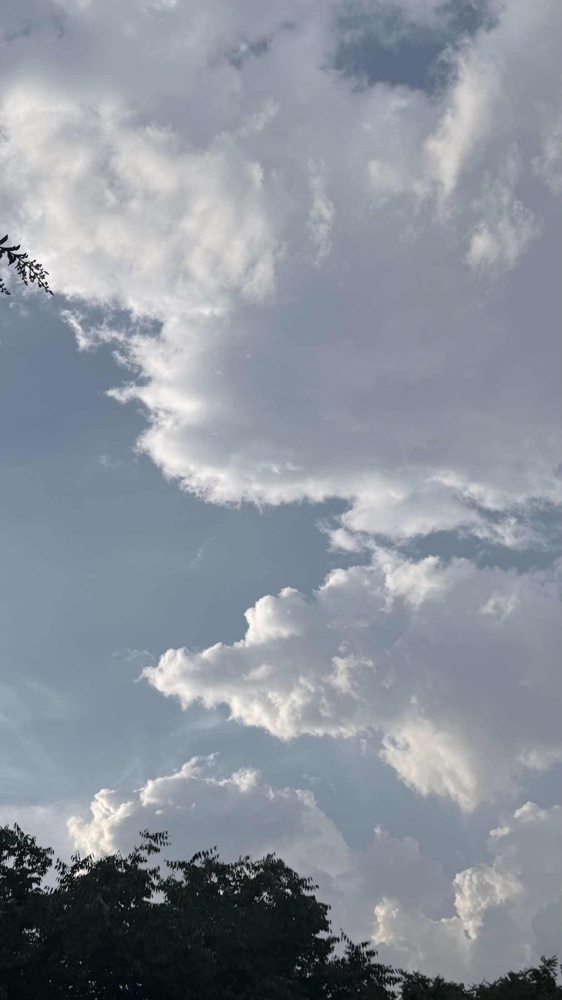
Silver Lining
Afternoon light catches the edges of layered gray clouds over the treetops.
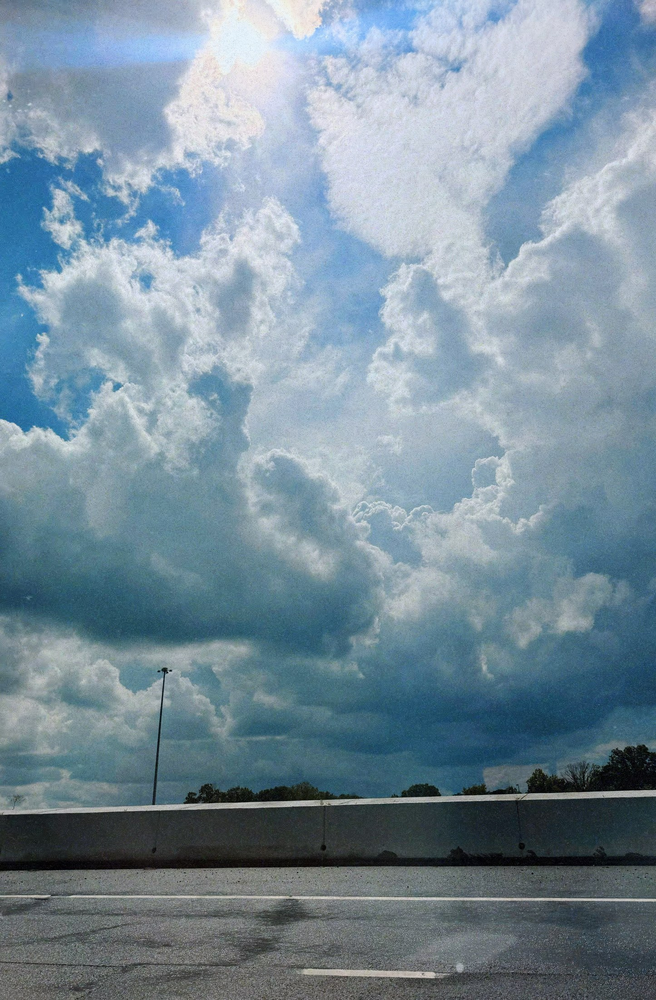
Sky Before the Storm
Billowing clouds fill the horizon beyond a roadside barrier, with blue patches still visible.
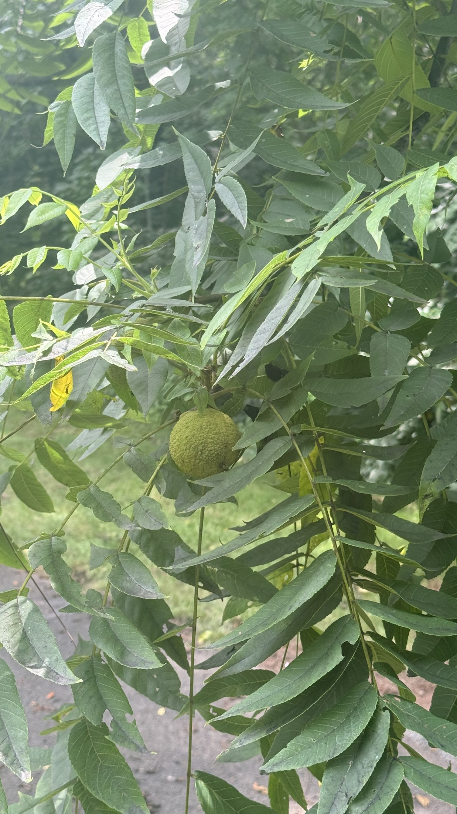
Hidden Among the Leaves
A small round green fruit hangs among long leaves and branches in the sunlight.
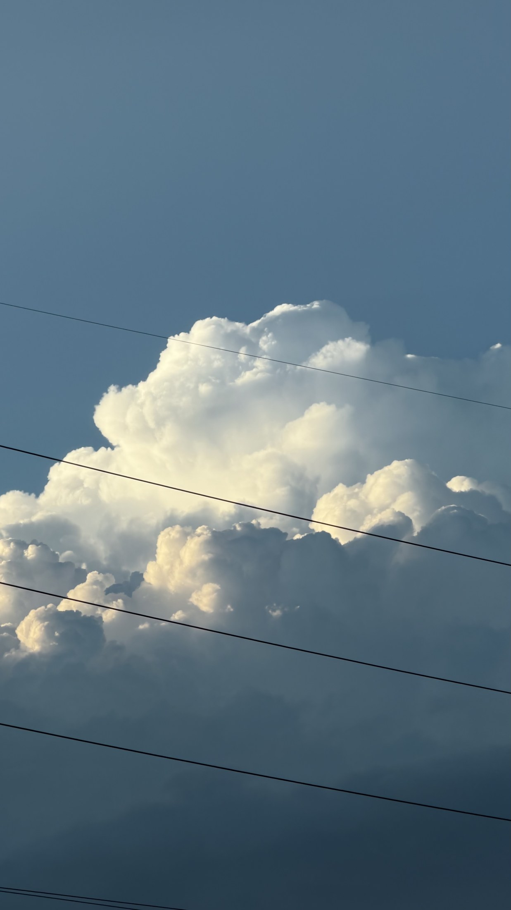
Finding beauty in the concrete jungle
A sunlit cloud bank climbs across a muted blue sky behind overhead power lines.
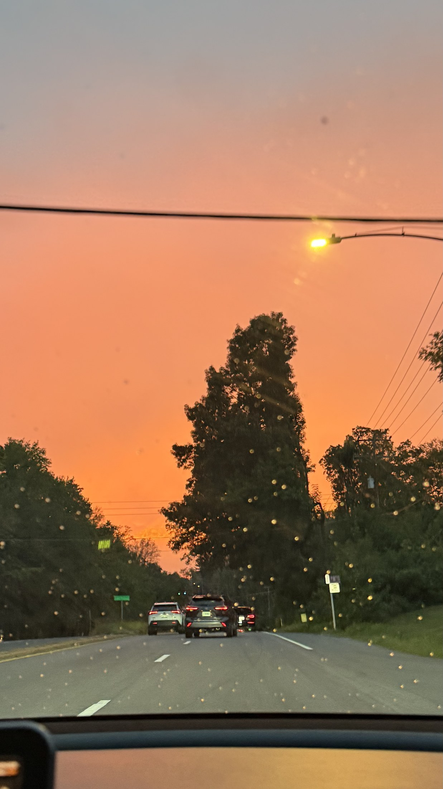
The Evening Commute
Warm orange sunset light fills the sky above a tree-lined road and passing cars.
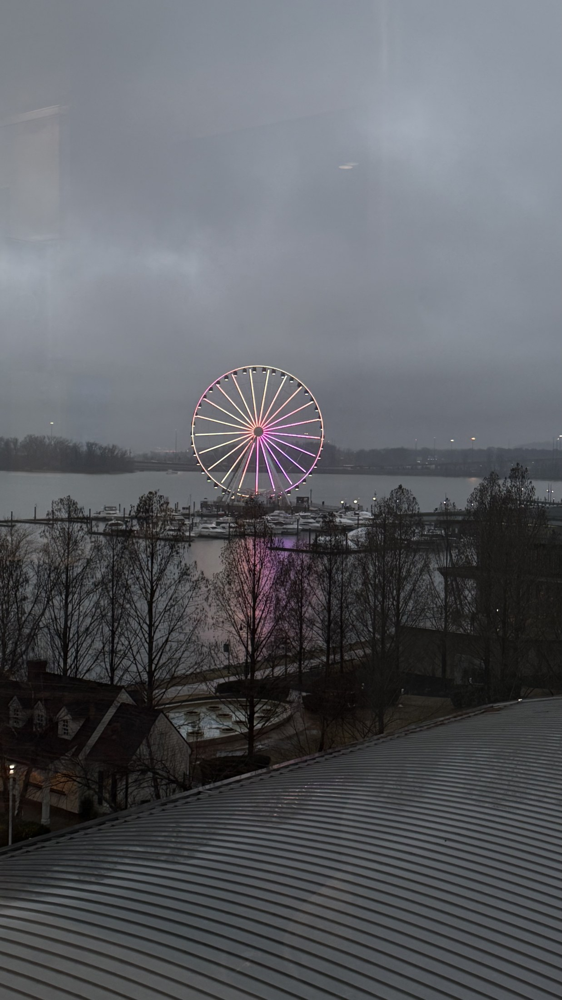
A Wheel in the Distance
A glowing Ferris wheel stands across the water beneath a gray evening sky.
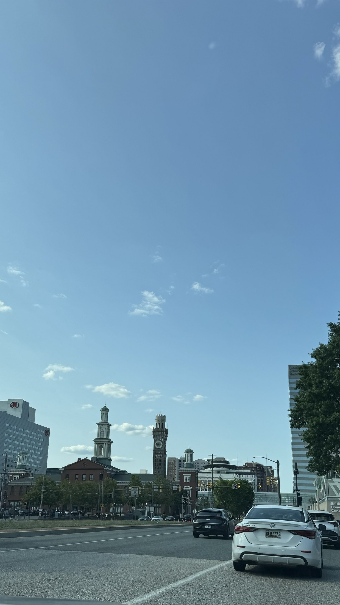
City Under Blue Skies
An open blue sky stretches above city streets, distant towers, and traffic.
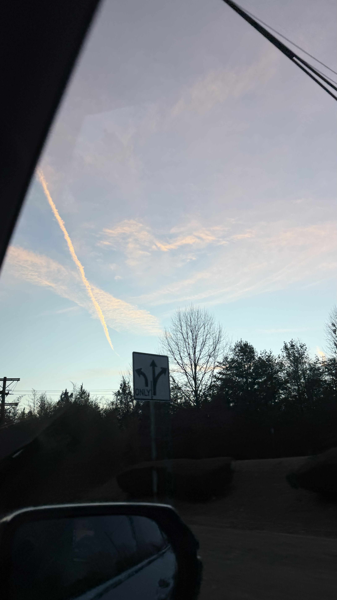
Another Look at the Clouds
A second view of the dramatic cloud-filled sky over the roadside barrier.